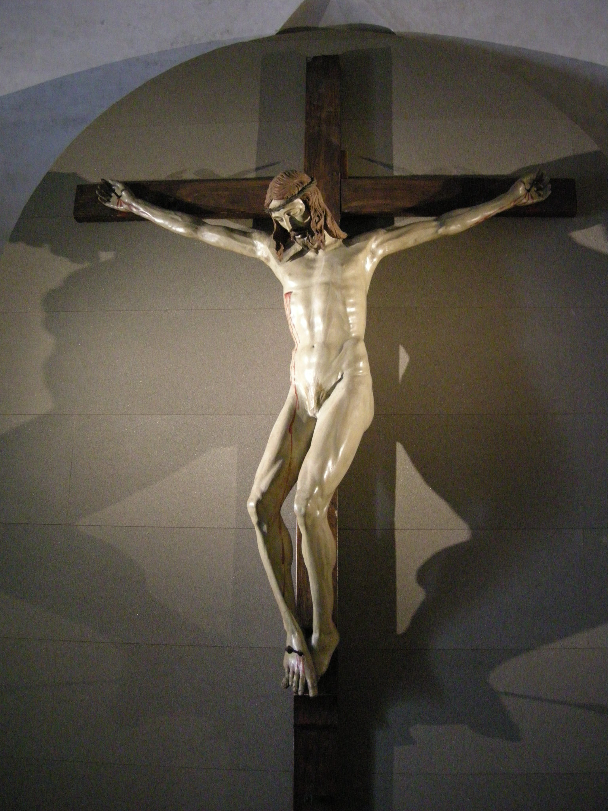

Works

Dome of Santa Maria del Fiore

The Crucifix

The Sacrifice of Isaac
And more...
| 1377 - 1446 | Life of the Italian Renaissance architect and sculptor Filippo Brunelleschi. |
| 1401 - 1403 | The Italian Renaissance sculptor and architect Filippo Brunelleschi competes for (and loses) the commission to create the bronze doors of Florence's Baptistery. |
| 1418 - 1428 | The Old Sacristy of San Lorenzo, Florence is built according to the design by Filippo Brunelleschi. |
| c. 1419 | The Italian Renaissance architect Filippo Brunelleschi designs the influential Ospedale degli Innocenti in Florence. |
| 1430 | The Italian Renaissance architect Filippo Brunelleschi is involved in a failed project by the city of Florence to flood Lucca. |
| 1436 | The Italian Renaissance architect Filippo Brunelleschi completes the dome of the cathedral of Florence. |
| 1436 | The Italian Renaissance architect Filippo Brunelleschi begins work on the Church of Santo Spirito in Florence. |